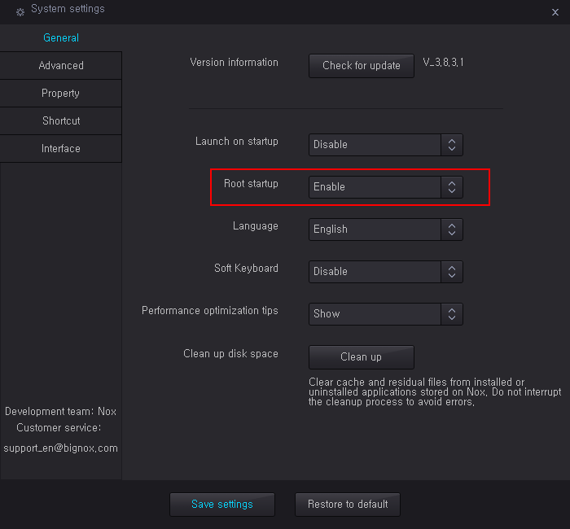
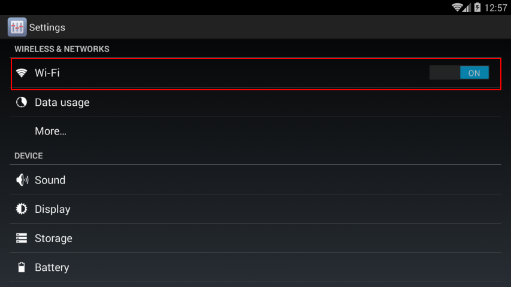
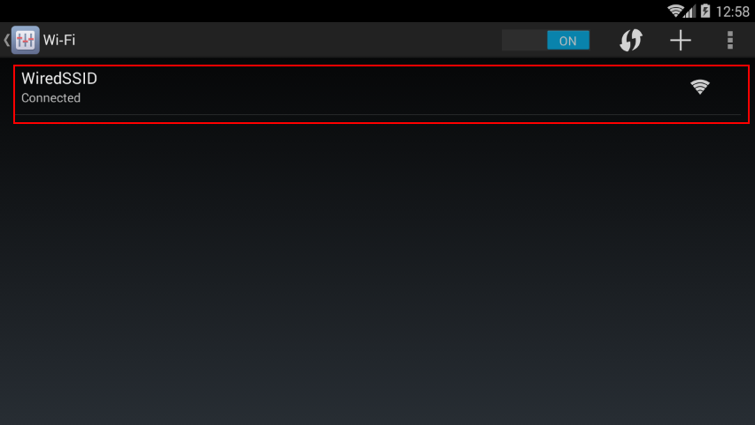
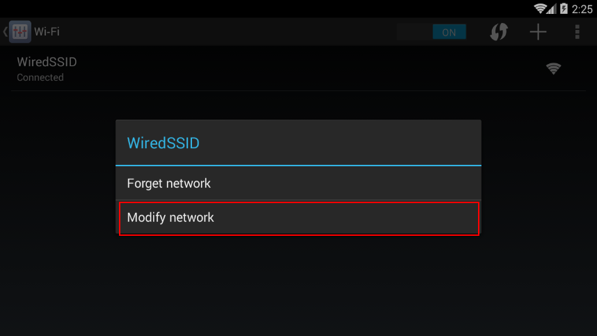
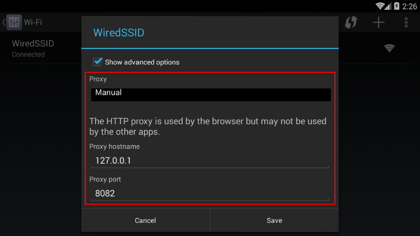

안드로이드 진단 환경 설정 매뉴얼
Table of Contents
1 필요 프로그램 설치
1.1 애뮬레이터 설치
- 먼저 안드로이드 앱을 구동시킬 환경이 필요하다.
- 본 매뉴얼에서는 Nox 라는 에뮬레이터를 설치해서 진행하겠다.
- 구글 검색 혹은 다음 URL에서 다운로드 한다.
- https://nox-app-player.kr.uptodown.com/windows/download
- 2018.5.21 기준 최신버전은 6.0.9.0 이다.
1.2 SuperSu 설치
- Nox가 설치되면
2 환경 설정
2.1 루팅 (Rooting)
- 루팅이란 루트 계정으로 로그인을 한다는 의미이다.
- 루팅을 하면 일반유저로는 할 수 없는 작업이 가능하다.
- 예를 들면 네트워크 프록시를 변경한다던가 하는 작업 등이 가능해진다. 따라서 진단을 할 때는 반드시 루팅하는 것이 필요하다.
- 실제 핸드폰에서는 루팅하는 과정이 다소 복잡하지만 녹스에서는 간단하게 설정이 가능하다.
- 녹스 화면 상단 'System Setting' 으로 들어간다.
- 'Root Startup'을 'Enable'로 설정하고 저장한다.

2.2 로컬 프록시 설정
- 루팅이 완료되었다면 HTTP 통신을 burpsuite 등의 로컬 프록시에서 볼 수 있도록 설정해보자.
- 안드로이드 화면 하단의 'Settings' 로 들어간다.
- Wi-Fi를 클릭한다.

WiredSSID를 길게 클릭한다.

그러면 다음과 같은 화면이 나타난다. 'Modify network'를 클릭한다.

Show advanced options 체크박스를 체크한다. 그러면 다음과 같이 프록시 정보를 입력하는 화면이 출력된다.
로컬 프록시 정보를 입력하고 'Save'를 클릭한다.
이 때, 프록시 IP정보를 localhost나 127.0.0.1이 아니라 ipconfig를 쳐서 나오는 ip주소를 입력하도록 한다.
또한 burpsuite에서도 해당 ip주소로 프록시를 구동하도록 한다.

2.3 프록시 사용시 주의점
- 프록시를 사용중이면 구글 플레이 스토어에서 앱을 다운로드할 수 없다. 귀찮지만 앱을 다운로드하려면 프록시를 끈 상태에서 받아야 한다.